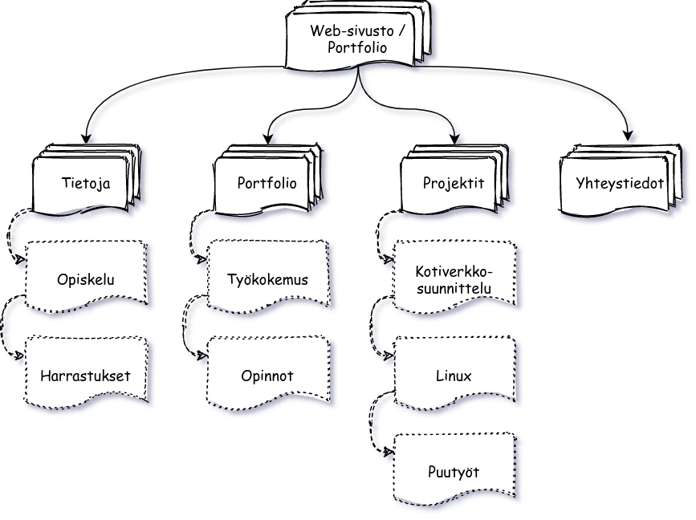

Koulutuksen puutteen lisäksi minulta puuttuvat verkostot ympäriltäni,
jotka ovat nähneet työni tuloksia ja jotka voisivat esim. suositella minua eteenpäin
tai joilta voisin saada vinkkejä ja uusia näkökulmia.
Sivuston kohteena on henkilökohtainen web-sivusto/portfolio,
joka tuo lisäarvoa oman oppimiseni ja ammatillisen kehittymisen lisäksi myös minulle ja etenemiselleni.
Sivuston tavoitteena on luoda sekeä, houkutteleva ja mielenkiintoinen kuva minusta,
ammattitaidostani sekä minusta työntekijänä.
Samalla se on tarkoitus olla myös laadukas näyte tekemästäni työstä
ja tällä tavoin herättää mielenkiinto osaamistani kohtaan.
Sivusto tulee löytymään LinkedIn -profiilin lisäksi myös työhakemuksistani
ja sen on tarkoitus kiinnittää potentiaalisten työnantajien,
kollekoiden ja samoista asioista kiinnostuneiden henkilöiden mielenenkiinto
osaamistani kohtaan ikään ja sukupuoleen katsomatta.
Sivustolla tullaan vierailemaan verkostoistumisen ja rekrytoinnin yhteyksissä
ja on suunniteltu toimivaksi niin puhelimella kuin tietokoneella.
Sivuston laajuus on sopivan suppea, että sivuston kävijä saa tarpeeksi tietoa,
mutta ei huku tekstin ja sivujen määrään.
Sijoituspaikkana toimii GitHub -sivuston ilmainen Pages -palvelu,
jossa koko lähdekoodi on nähtävissä muiden GitHub-projektien tapaan täysin vapaasti.
Pages -palvelu ei tue .htaccess-tiedostoa, joten kaikki sivustolla oleva on vapaasti kaikkien nähtävissä,
eikä siten voida rajata esim. salasanan taakse.
Väriteemana ajatus käyttää tummaa teemaa, jollain pienellä korostuksella.
Sivuston päivitys vähintään lukuvuosittain opintojen edetessä
tai tarpeen mukaan useammin esim. työhakemuksien aikaan tai
kun sivulle on tuoreessa muistissa uutta annettavaa.
Aineiston tekijänoikeudet lähtökohtaisesti omia, mutta projektin edetessä katsottava, tuleeko käyttöön muiden tuotoksia esim. ikoneita tms. josta mainittava.
